Research Assistant, AI Engineering Lab, Hohai University, partnered with PowerChina · Jun. 2024 – Oct. 2024
CAE Engineering Intern, PowerChina · Feb. 2025 – Jun. 2025
Hydropower dams are built on layered, irregular terrain — and generic meshing tools produce meshes that neither fit the layers nor stay small.
The key idea? Project a clean 2D parent mesh into vertically stratified 3D layers, so the mesh follows the geology — then package the algorithm into a Rhino plugin and an automated CAE platform used on real projects.
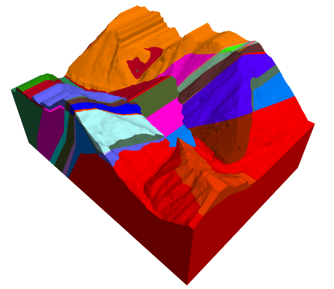
Phase 1 — validating a dam design under every load case.
The first task was a full-process numerical simulation of a dam design. I combined field-standard blueprints, material properties, and interface contacts into a programmable Rhino–FLAC3D environment, then ran iterative FEA under three load cases, tracking peak stress, deformation, and factor of safety at every loading increment.
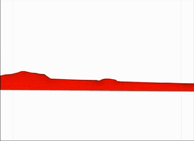
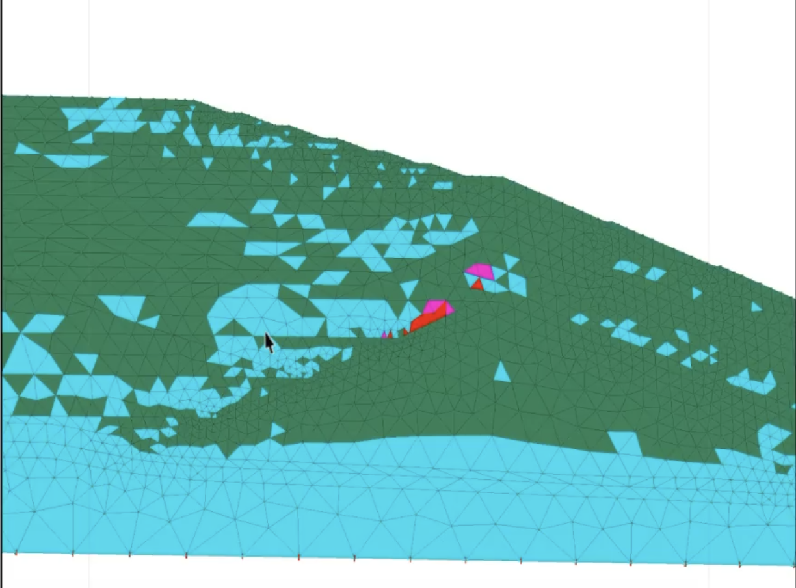
All responses stayed within design thresholds. The result was a reliability assessment report confirming the safety margins of the dam’s core wall, used as a reference for the final design audit.
What goes wrong when generic tools mesh layered geology?
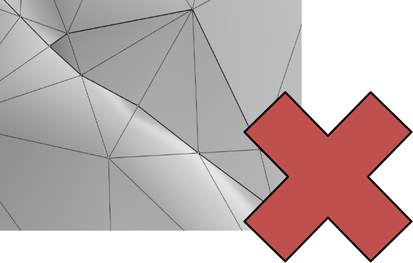
Phase 2 — how do we make the mesh follow the layers?
I developed a vertically-stratified mesh projection algorithm in Python: abstract each layer’s geometry, align the nodes between layers (same number, same order), then project a 2D parent mesh down through the layers to build the 3D mesh.
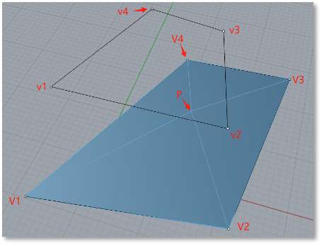
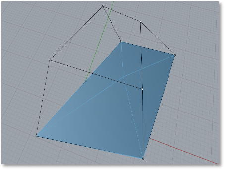
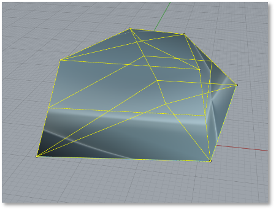
Two ingredients make the node alignment work. Douglas–Peucker smoothing removes redundant collinear points and controls the number of control points on each boundary curve, and mean value shape function interpolation matches nodes between arbitrary polygons.
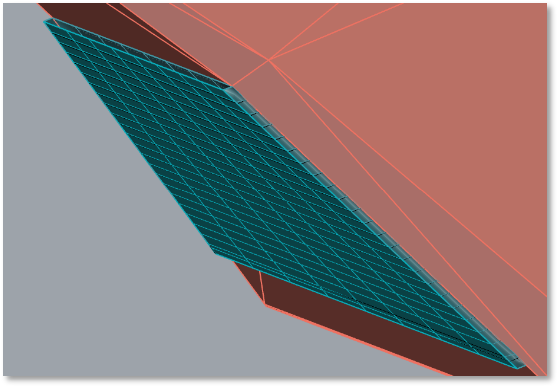
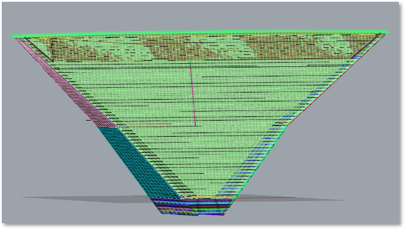
Phase 3 — can the method support real design iterations?
At PowerChina I extended the research into a tailored CAE platform covering site selection, 3D modeling, FEA, and reliability checks. I owned two modules:
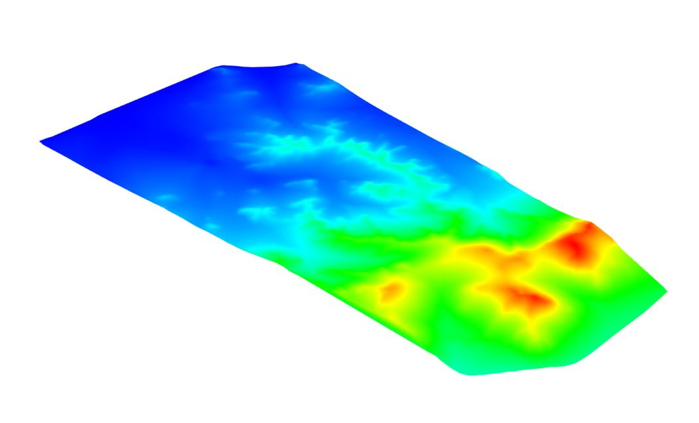
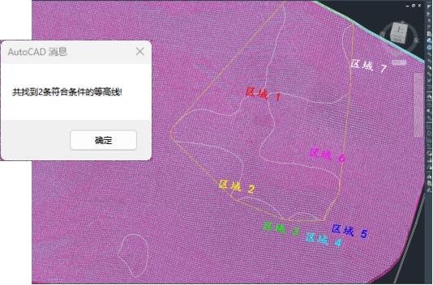
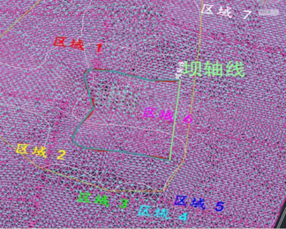
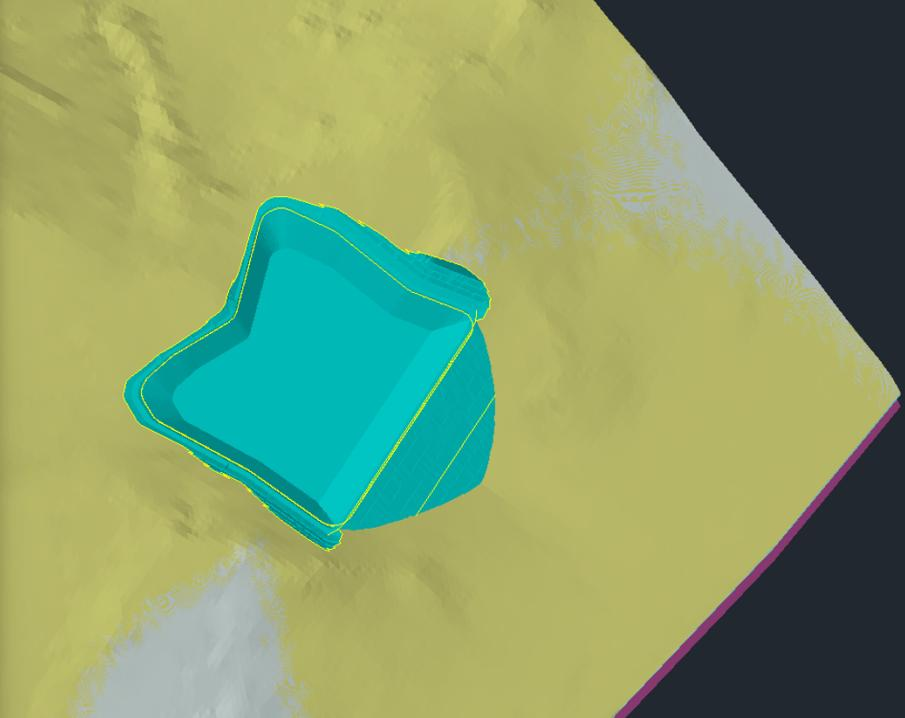
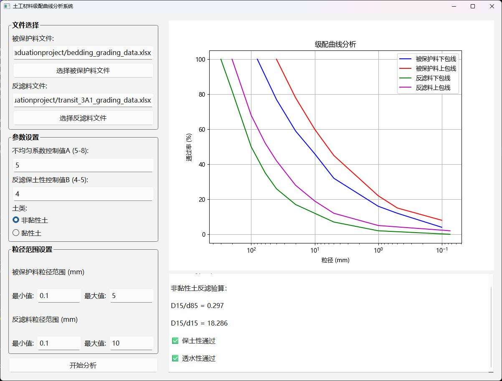
Together these closed the loop between design and validation: engineers could adjust aggregate grading within safety limits and immediately see the stability feedback. The platform was applied on 2 active national projects, speeding up iterations and reducing input errors.
The meshing work led to three granted invention patents.